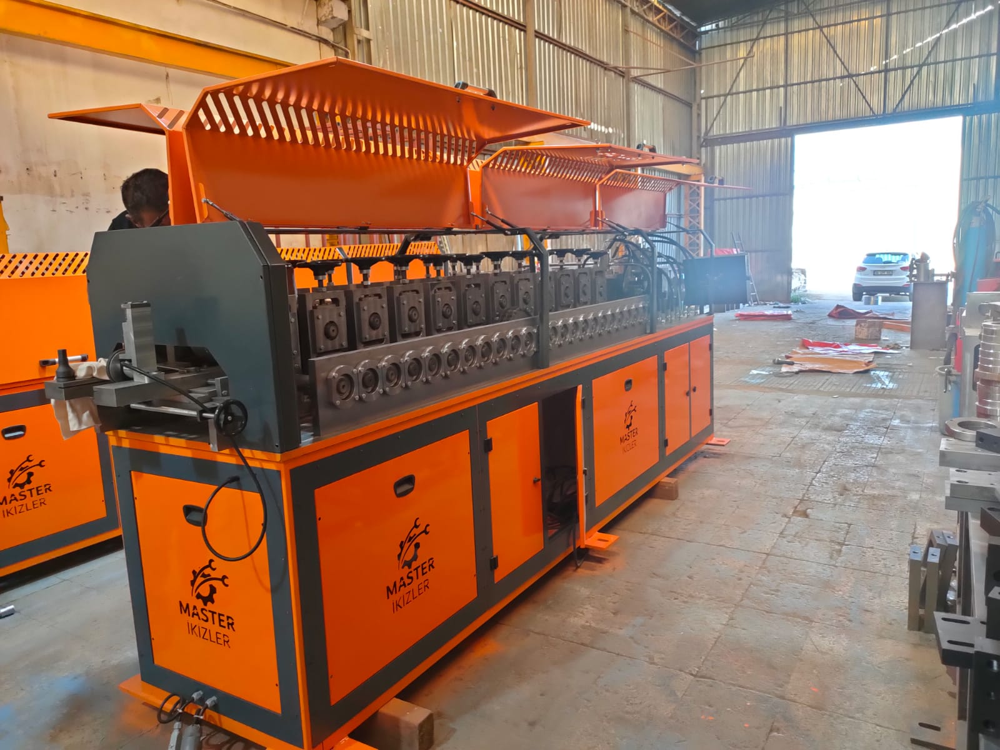
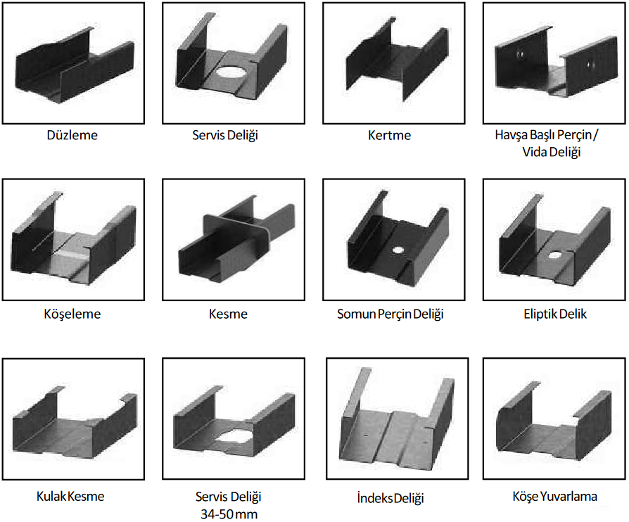

Genel özellikler
- Operatör, talimatlarını panelin içine monte edilmiş, endüstriyel 19” dokunmatik ekranlı bilgisayar üzerinden kontrol eder. Ağ ve/ veya internet bağlantısı ile makinelere kolaylıkla dışarıdan erişilebilir.
- Düz saca profil şeklinin verilmesi, profilin uzunluğunun kesilmesi, servis – perçin delikleri açılması, profil sırtı boşaltma, profil daraltma vb. işlemler bilgisayar kontrollü sistem ile sürücü bölmesinin içinde ve hidrolik istasyonlarda yürütülür.
- Üretim tamamen otomatiktir. Operatör, üretimin herhangi bir anında makineyi durdurup yeniden başlatabilir. Ayrıca makinenin üretim hızı çalışma sırasında ayarlanabilir.
- Galvanizli Çelik, Panel Makinesine rulo açıcı üzerinden otomatik olarak beslenir.
- Makinelerin taşınması çok kolay ve fabrika kurulum süresi çok kısadır.
- Eğitim programımızın içeriğinde:
- 3 Boyutlu Dizayn Programı
- Panel Programı
- Üretim/Makina Kullanımı
- Makine Bakımı
- Kalite yönetim sistemimiz ve diğer tüm sistemimiz, üretimimiz olan profiller ve montaj işleri standartlara uygunluğu açısından tescil edilmiştir.
- Masterikizler Makineleri, ticari ve yapısal yük taşıyan binalarda iç/dış yapısal gereksinimleri sağlar. 45mm flanş ile çelik perçinli bağlantı kullanılarak yapıların duvar/tavan/çatı çerçevesi üretimi için optimize bir profile sahiptir.
- Her bir Masterikizler panel makinesi, özellikle orta yüksekliğe kadar olan yapılarda bütün duvar, tavan, çatı panelleri ve kirişler için idealdir.
- Rulo Açıcının Özellikleri
- 2500 KG'ye kadar hammadde taşıyabilir.
- Yumuşak kullanımı olan bir elektronik başlama/durdurma operasyonu sağlar.
- Hız ayarlıdır.
- İleri-Geri yön ayarlıdır.
- Tasarım Yazılımı
- Yazılımımız, hafif çelik yapı sistemi için özel olarak tasarlanmış güçlü, esnek ve kullanıcı dostu bir araçtır. Villalardan çok katlı yapılara veya oda seviyeleri farklı yapılara kadar tüm tasarım çalışmaları, yazılımımızla yapılabilmektedir.
- Tasarım Yazılımı Özellikleri
- Kullanıcı dostu 3B grafik arayüzü
- Yardımcı geometrik araçlar
- Üretim işlemleri, kaplama ve 3B yapı perspektifi görüntüleme
- Dxf dosyası açabilme
- “Autocreate” özelliği ile tüm yapıyı otomatik oluşturma
- İki boyutlu mimari çizim veya aks çizgilerinden üç boyutlu yapıyı oluşturma
- Profiller arası ve paneller arası çakışma, panel geometri ve azami uzunluk kontrolleri yapma
- Analiz için gerekli malzeme özellikleri, yük kombinasyonları ve yük değerleri girme
- Analiz olarak mesnet reaksiyonları, sehim kontrolü ve kuvvet diyagramları görüntüleme
- Dxf formatında çıktı alabilme
- Malzeme raporu alabilme
- 3 boyutta veya plan görünümünde dxf çıktısı alabilme
- SAP2000 çıktısı alabilme
- Ark üretim dosyası alabilme
- Mobil Görüntüleme çıktısı alabilme
- Üretim Yazılımı
- Dizayn programındaki tasarımdan sonra üretim dosyası oluşturulur. Üretim dosyası, makinemize yüklenerek, bütün parçalar tam otomatik olarak üretilir.
- Üretim yazılımı Windows tabanlı ve kullanıcı dostudur. İşlenmiş profiller(mavi), işlenen profiller(kırmızı), işlenecek profiller (gri) gerçek zamanlı grafikler olarak, akıllı renk kodlamayla gösterilir.
- Kullanıcı ayarlarından; istasyon işlem süreleri, lisans yükleme ve dil ayalarını değiştirme işlemleri yapılabilir.
- Sistem ayarlarından; istasyon pozisyonları, yazıcı ayarları, yeni istasyon ekleme- çıkarma, ısı ve basınç değerleri gösterme ayarları, istasyon kullanım adedi görüntüleme ve sıfırlaması yapılabilir.
- Üretim bölümünden, üretim hızı ayarı, tüm işlemlerin otomatik ve manuel üretimi yapılabilir, harcanan çelik miktarı, kullanılacak perçin sayısı, üretim süresi-kalan süre, üretim sırasındaki ısı ve basınç değerleri görüntülenebilir.
- Kalibrasyon ayarlarından boy ve istasyon kalibrasyonları yapılabilir.
- Raporlama bölümünden, üretim raporları, hata raporları ve istasyon kullanım raporları elde edilir.
- Simülasyon moduyla, gerçek üretim yapmadan, profil üzerinde yapılabilecek tüm işlemleri ve sonuçlarını görebileceğiniz bir simülasyon gerçekleştirilir.

| - | Hafif Çelik Profili Üretim Makinamızın Genel Özellikleri |
|---|---|
| Profil Tipi | Prefabrik yapı üretiminde kullanılan her profil tipini üretir |
| İstasyonlar | 11 |
| İşlemler | 12 Standart işlem |
| 1 | Düzleme |
| 2 | Servis Deliği |
| 3 | Kertme |
| 4 | Hava Başlı Perçin / Vida Deliği |
| 5 | Köşeleme |
| 6 | Kesme |
| 7 | Somun Perçin Deliği |
| 8 | Eliptik Delik |
| 9 | Kulak Kesme |
| 10 | Servis Deliği 34-50 mm |
| 11 | İndeks Deliği |
| 12 | Köşe Yuvarlama |
| Profil ölçü aralığı | 0.63 mm - 2.5 mm |
| Makineden üretmek istediğiniz profilin genişliği | Bize belirttiğiniz profil genişliğine göre makinenizi hazırlıyoruz. Tek makinada tek profil genişliğindeki tüm profilleri çıkartılabilir. (63mm, 75mm, 90mm, 100mm, 140mm, 150mm gibi ölçüler örnek olarak verilebilir.) |
| Yazılım | Dahil |
| Üretim Hızı | 200m/saat – 750m/saat (Makine üzerindeki işlem sayısı nedeniyle makine hızı değişmektedir.) |
| Servo Motor Gücü | 5 kW (İsteğe göre arttırılabilir) |
| Hidrolik Motor Gücü | 7.5 kW |
| Hidrolik Yağ Deposu | 80 litre |
| Ağırlık | 4.000 kg |